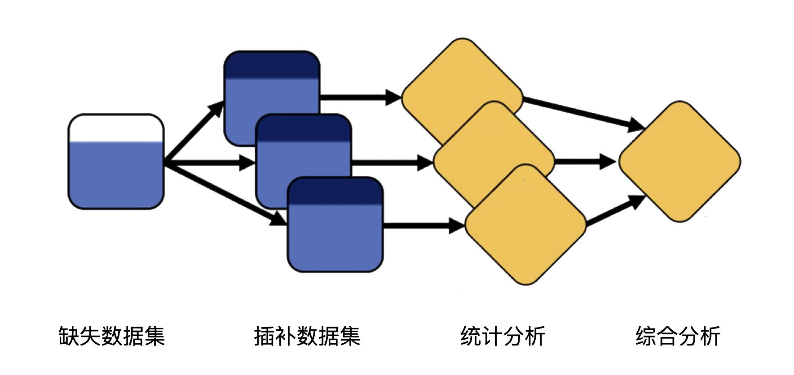

17 缺失数据
数据缺失是指研究数据中由于缺少信息而造成的数据的不完整。它指的是现有数据集中某个或某些属性的值是不完全的。数据缺失与生存分析中的删失不同，删失的概念是指可以观察到受试者在一定时间内未出现结局事件，而数据缺失是指在随访期间既不知道受试者有没有出现结局事件，也不知道他是否没有出现结局事件。
17.1 数据缺失的机制
17.1.1 完全随机缺失（missing completely at random，MCAR）
所缺失的数据发生的概率既与已观察到的数据无关，也与未观察到的数据无关。MCAR是很强的机制假设；在相应分析模型正确时，完整病例分析可避免由缺失机制本身引入的选择偏倚，但仍会降低精度。(Sterne 等 2009年)比较缺失者与非缺失者的已观测特征只能描述差异，不能证明MCAR，因为缺失值及其与未观测量的关系无法由数据直接检验。
17.1.2 随机缺失（missing at random，MAR）
假设缺失数据发生的概率与所观察到的变量是有关的，而与未观察到的数据的特征是无关的。数据缺失不是完全随机的，即该类数据的缺失依赖于其他完全变量，如入院患者的体重缺失与病情的轻重有关，病情严重的患者无法测量体重； MAR同样是条件性、不可由观测数据完全检验的假设：若已纳入病情严重程度等相关已观测信息，缺失概率可不再额外依赖未观测的体重；遗漏关键预测因素时，表面上的MAR分析仍可能有偏。
17.1.3 非随机缺失（missing not at random，MNAR）
如果数据的缺失既依赖于完全变量又依赖于不完全变量本身，这种缺失即为不可忽略的缺失。数据的缺失与不完全变量自身的取值有关，如人群不原意提供家庭收入。
17.2 数据缺失的传统统计学方法
当数据缺失机制是完全随机缺失时，基于似然推断的统计分析是有效的。不幸的是，数据不太可能随机丢失，因此，最好是采用一系列数据缺失的分析方法，每个分析都探索不同的方法来解决数据缺失问题。如果大多数分析方法一致，那么结果就更有说服力。
17.2.1 删除含有缺失值的个案
对缺失值进行处理的最原始方法。它将存在缺失值的个案删除，如果数据缺失问题可以通过简单的删除小部分样本来达到目标，那么这个方法是最有效的。然而删除法因为单一值的缺失而放弃大量的其他数据，这种删除是对信息的极大浪费，损失了样本量，降低了统计效能。
对于结局变量缺失，不存在可普遍适用的5%阈值；即使缺失比例很低，只要缺失与治疗或预后有关，仍可能造成实质偏倚。完整病例分析可作为预先说明的敏感性分析，或在MCAR／合理的条件性MAR假设下使用，但应同时报告缺失比例、缺失原因、各组随时间的缺失模式及其对结论的可能影响。极端情景分析可以帮助展示结论的稳健性；连续结局的情景值应基于临床可接受的范围和明确的MNAR偏移假设，而不宜机械地采用均值±1或2个标准差。
17.2.2 可能值的单纯插补
其基本思想是以最可能的值来插补缺失值，比全部删除不完全样本所产生的信息丢失要少。有多种常用的单纯插补方法。
均值插补。如果缺失值是连续变量，就以平均值来插补缺失的值；如果缺失值是分类数据，用该数据的众数来补齐缺失的值。这是最基本的插补方法，该方法计算起来非常快速，但缺点是均值插补会减少数据的变化差异。
最后观测值向前推进法，用于重复测量数据，采用最后一次观察到的值进行插补未观察到的值，其统计假设是最后一次观察后所有未来的观察保持不变。
建模预测：将缺失值作为预测目标采用其他指标来预测。该方法有个根本的缺陷：如果缺失和其他数据无关，则预测的结果毫无意义。常用的方法是根据回归方法或者邻近匹配方法。 单次插补（包括均值、众数、最后观测值向前推进和确定性预测）把插补值当作真实观测，通常低估方差并使置信区间过窄；除非其数值含义本身就是预先定义的结局规则，一般不宜作为主要推断分析。
贝叶斯极大似然估计：在缺失类型为随机缺失的条件下，假设模型对于完整的样本是正确的，那么通过观测数据的边际分布可以对缺失数据进行极大似然估计。它一个重要前提：适用于大样本，有效样本的数量足够以保证似然估计值是渐近无偏的并服从正态分布。但是这种方法可能会陷入局部极值，收敛速度也不是很快，并且计算很复杂。
17.2.3 多重插补（Multiple Imputation，MI）
多重插补的思想来源于贝叶斯估计，认为待插补的值是随机的。具体实践上为每个缺失值产生一组可能的插补值，这些值反映了模型的不确定性；每个值都可以被用来插补数据集中的缺失值，产生若干个完整数据集合。每个数据集合都进行统计分析，然后综合这些统计分析结果。 插补次数应足以控制Monte Carlo误差，缺失比例较高时通常需要多于传统的5次；应报告插补模型、纳入变量、插补次数、诊断及与完整病例／MNAR情景分析的一致性。

图17.1 多重插补图示
多重插补通过从缺失值的预测分布中重复抽样，生成多个完整数据集；随后分别分析并按Rubin规则合并估计值和标准误，从而反映插补不确定性。它可采用联合建模或链式方程等实现；许多实现具有贝叶斯抽样解释，但多重插补、极大似然和贝叶斯分析并非彼此等同。无论采用何种方法，插补模型都应与分析模型相容，纳入结局、治疗分组、所有分析变量，以及与缺失或结局相关的辅助变量；模型设定错误、正值性不足或MNAR均不能仅靠多重插补解决。(Sterne 等 2009年)
17.3 依从性
临床研究中不遵守方案的干预是受试者退出分析的一个原因，也是结局变量出现缺失的主要原因之一。不依从可能是由于干预组或对照组中的不良事件、兴趣或感知利益的丧失、潜在状况的变化或各种其他原因。不依从性对试验结果的影响是，与对照相比，干预的任何益处都将减少，从而使试验所需样本量大于计划。如果某组中的不依从性比另一组更大，且不依从与结果相关，那么不依从受试者的退出可能会导致偏倚。
不依从性的定义也会对分析产生重大影响。临床研究实践中可以定义在研究中接受的干预部分与方案定义的匹配比例。需要分别描述受试者对干预或者对照的依从性，如果受试者对干预措施的依从性低于对照组，则可能无法合理预期该疗法在临床实践中的广泛使用。干预可能是有效的，但如果大部分受试者不能忍受，则可能没有什么价值。
最好的策略是设计一个试验以使不依从性最小，使试验能够克服不可预防的不依从性，然后使用意向治疗原则接受结果。然而对于不可避免的不依从性，有必要采取一定的统计方法。
17.3.1 伴发事件与补救用药
结局指标的准确估计问题，因受补救用药的使用，以及在试验过程中因无效或安全性问题而脱落的伴发事件影响。因此，ICH E9(R1)中总结和强调了”估计目标（estimand）“的概念，即通过估计目标详细定义在什么样的人群中需要估计什么科学问题。对伴发事件的定义与处理，可以参考以下5个策略:
疗法策略：无论是否发生不良反应、停药或补救治疗，均使用其后的结局数据进行分析。该estimand描述将研究用药置于实际临床路径（包括后续补救治疗）中的总体效果；它不等同于”混杂”，但可能因两组补救治疗使用不同而使疗效解释更接近治疗策略的实际效果。此策略要求尽可能继续收集伴发事件后的结局和安全性资料。
组合策略：重新设计结局事件，如结局为二分类变量，出现伴发事件以及补救治疗时考虑结局为无效。临床上多见于恶性肿瘤的生存分析，发生死亡时考虑治疗无效，因此将死亡与肿瘤无复发组合为无进展生存。
假设策略：关注假设伴发事件未发生时的结局，例如假设未使用补救治疗、未停药时的疗效。该策略必须说明临床上可理解的反事实情景及相应识别假设；其后数据不是”天然缺失”，而是需要借助模型、插补或加权等方法估计的反事实量。
主层策略：目标人群为未发生补救治疗的人群，发生不良事件补救治疗后的测量值无需收集，不做为缺失数据。若剔除了发生补救治疗的受试者，两组间可能存在混杂因素，应该使用恰当的分析方法。通常需要借助敏感性分析来考察结果的敏感性。临床上常见的方法是生存分析中的原因别竞争风险。 主层策略针对的是在不同治疗条件下会（或不会）发生伴发事件的潜在人群；该人群成员资格不可被直接观察，通常需要比常规ITT更强的假设，不应简单地通过排除已发生补救治疗者来实现。
在治策略：采用伴发事件之前的治疗效果作为新的指标，补救治疗后的测量值无需收集。可采用多时间点重复测量模型分析数据。对于间断的测量缺失可基于合理的假设对数据进行插值估计。
考虑缺失数据填补方法需与估计目标的分析策略匹配，首选需分辨缺失数据是否需要填补（如组合策略和在治策略下发生伴发事件后的数据缺失无需填补），然后再选择符合分析策略的数据填补方法。如在疗法策略和组合策略发生伴发事件前的缺失数据，可采用相关统计方法进行填补，填补模型中需考虑的变量需包括基线指标、治疗组、测量时点，以及伴发事件等情况。 还应将每一种伴发事件对应的estimand策略、主要估计方法和敏感性分析预先写入方案；同一试验可对不同伴发事件采用不同策略，但不能以事后选择填补法来替代估计目标的定义。ICH E9(R1)将治疗策略、组合、假设、在治和主层列为五类常用策略。(International Council for Harmonisation of Technical Requirements for Pharmaceuticals for Human Use 2020年)
17.3.2 失访偏倚
如果研究的效应指标是生存事件，标准生存分析通常要求在给定模型中已纳入的历史信息后删失为非信息性（独立删失），而非笼统地假设失访”随机”。然而，如果研究组中失访的受试者者人数不同，失访既与干预相关又与结局相关，则数据分析可能存在偏差。图17.2中只分析无缺失的患者，导致原本关闭的对撞打开，形成后门路径。如，慢性心力衰竭试验中比较了器械（心脏起搏器加除颤仪）与药物治疗慢性心力衰竭患者，主要终点结果为死亡。随机分配到其中一个设备组的人不知道他们被分配到哪个设备，但药物治疗组的人知道没有安装任何设备。结果，药物治疗组的受试者开始退出试验，撤回了他们的知情同意，许多人要求使用新批准的设备。因此，当试验接近完成时，药物治疗组的退出率为26%，器械组的退出率为6%。此外，无法收集有关撤回同意的人的后续信息，显然，这些缺失的受试者不是随机的，不能排除与疾病状态有关的可能性，从而产生严重偏倚的可能性。 因此，不能只比较各组失访比例；应比较失访前的结局轨迹和预后变量，并预先设定针对信息性失访的分析与敏感性分析。删失若依赖未记录的病情恶化，即使使用常规Cox模型也可能产生偏倚。

图17.2 失访偏倚
17.3.3 逆概率失访加权法
为了调整治疗不依从性，有必要对临床试验结果进行统计调整。逆概率失访加权法（inversed propensity censoring weighting，IPCW）和其他复杂的方法，已被充分研究用于分析随机试验。假设一项试验将10名病人随机分配到治疗组，其中8人没有坚持治疗方案，因为治疗本身或疾病会影响治疗的坚持性，那么IPCW方法就会删除这8例不坚持治疗的患者，并将2例坚持治疗的病人的权重提高5倍，即[(10-8)/10]的倒数。 该例仅为静态直观说明；真实研究中的删失往往随时间发生，不能简单删除不依从者后给其余受试者一个固定权重。应以纵向人时数据拟合删失模型，并使用稳健方差或适当的重复测量／生存模型进行推断。
IPCW也可以用于治疗过程中的转组（干预组转换至对照组或对照组转换至干预组）。把发生治疗转换的人看作失访，失访的时间为治疗转换发生的时间。再通过对没有发生转组的患者进行加权，把没有发生治疗转换的人扩张成原来的人数，进而校正转组对效果评价的影响。 IPCW的目标是用仍未失访／未偏离策略者代表在相同观察历史下可能失访者，因此权重模型应以每个随访时点的既往治疗、结局和时间依赖混杂因素为条件。该方法还需要一致性、可交换性和正值性；极端权重提示某些历史下几乎无人继续随访，应报告权重分布、截尾规则和加权后的协变量平衡。(Rimawi 和 Hilsenbeck 2012年; Hernán 和 Robins 2017年)
缺失数据的逆概率和稳定的逆概率可以表示为
公式17.1
\[W_{k_{i}}^{C = 1} = \ \frac{1}{Pr(C = 1|{T,\ \ k}_{i})}\]
\[W_{k_{i}}^{C = 0} = \ \frac{1}{1 - Pr(C = 1|{T,k}_{i})}\]
\[{SW}_{k_{i}}^{C = 1} = \ \frac{\Pr(C = 1|T)}{Pr(C = 1|{T,k}_{i})}\]
\[{SW}_{k_{i}}^{C = 0} = \ \frac{1 - Pr(C = 1|T)}{1 - Pr(C = 1|{T,k}_{i})}\]
其中 \(C = 1\) 表示缺失。在计算逆概率的分子和分母时一定要注意在回归方程中加入干预变量。如果研究中既有混杂因素，又有失访偏倚，可以分别计算两个逆概率，然后总的逆概率即为两个逆概率的乘积： 在实际IPCW分析中，通常只对仍可观察到结局的人时赋予”保持未删失”的逆概率权重；分母是给定既往历史仍未删失的条件概率，稳定化分子可仅含基线治疗或更简化的历史。上述公式用于说明思想，具体定义必须与C的编码和分析时点一致。
\[{SW}_{k_{i}}^{T,C} = {SW}_{k_{i}}^{T}*{SW}_{k_{i}}^{C}\]
回想案例9.1有部分患者的结局事件标记为Censor，意味着这些患者我们没有观察到他们的结局。因此，分别计算治疗的逆概率和失访的逆概率。然后将其乘积作为整体概率放入回归方程。
干预组与对照组相比能显著增加手术的缓解率，计算比值比为1.96。检查假人群中的平衡性，两组在加权后协变量基本一致。
17.4 幸存者偏倚与治疗零点
幸存者偏倚来源于只有长期生存的患者才能长期接受一种治疗。假设我们想利用医疗数据库估计他汀类药物对癌症患者死亡率的影响，直接比较长期使用者、短期使用者和非使用者就会产生偏差。因为长期使用者由于种种原因已经生存了很长时间（可能由于这些人本身就很长寿），我们称为幸存者偏倚。
假设一个完全依从且无删失的随机对照试验数据，12名受试者被随机分配到三种治疗策略中的一种：无阿司匹林组，一年阿司匹林组，或两年阿司匹林组，每组四人。在每种策略下，第一年结束时每组都有1人死亡，第二年结束时每组都有3人死亡。随机对照研究下此三组比较无明显差异。假设我们天真地比较了实际服用阿司匹林两年的人（3人）和没有服用阿司匹林的人（4人），两组的死亡率分别是（2/3）和（3/4），其风险比<1，尽管我们知道实际上阿司匹林的治疗没有效果。接受两年治疗的人在这两年里是”不死的”，数据分析时选择删除了那些接受阿司匹林治疗且已经死亡的病人，这就是为什么这种天真的分析被称为幸存者偏差。
产生这个问题的深层次问题在于，在随机对照研究中中，研究对象入组时即被分配干预措施，入组和分配干预措施是同步的。但观察性研究中，研究对象入组时，未被分配干预措施（不能依据研究对象之后接受的干预措施决定前面的组别），即无法实现入组和干预分配的同步。换句话说，在观察性研究中，研究对象可能在多个时间点满足入组标准，都可以作为随访开始时间，但分析时需将随访开始时间确定下来。
我们现在需要将这些见解转移到观察性数据的分析中。使用观察数据模拟完全依从性的随机试验。假设我们想用一个有12人的医疗数据库来估计阿司匹林治疗对生存的影响。我们可以通过三个步骤来模仿随机试验的分析，即克隆、删失和加权。
克隆：将干预个体分配到任何一个治疗策略。对照组直接被分配到无干预的策略中。接受了治疗的个体，即可以被分配到一年阿司匹林组或两年阿司匹林组。我们将这个个体复制一份，分别分配到这两个策略。相当于在数据集中有这个样本的两个拷贝，每个拷贝分配到不同的策略。
失访：如果克隆样本在随访期间偏离了指定的策略，我们就人为指定他们为失访。举个例子，如果被分配到一年阿司匹林组的克隆样本在随访一年后继续接受阿司匹林治疗，就会被人工指定为失访；或者被分配到两年阿司匹林组的克隆样本一年后没有接受治疗，就也会被人工指定为失访。
加权：为了消除人工失访带来的选择偏差，可以使用逆概率失访加权。同时由于一份样本被多次利用，回归时指定cluster。 克隆、人工删失和加权应从同一个明确定义的time zero开始：该时点必须同时满足纳入标准、治疗策略分配和随访起点。还应检查每个策略下的正值性、人工删失后的权重稳定性及竞争事件的处理；否则克隆并不能自动消除不死时间偏倚。(Dickerman 等 2019年; Hernán 和 Robins 2020年)